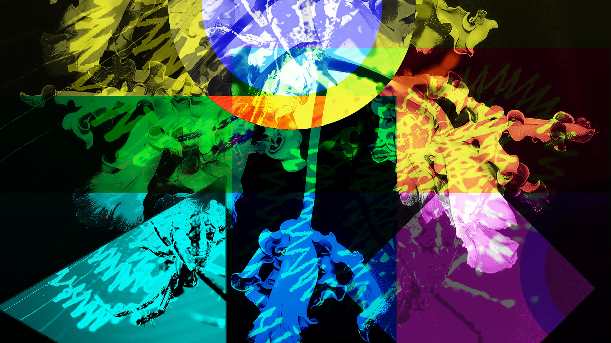

Serpiente
Come, crece, no te muerdas. El clásico de los celulares.

_theme · iroFactory
Documentación para juegos y proyectos interactivos. La página no baja: gira. Usa el cubo, las flechas de los lados o ← →; Esc pone pausa.
Las seis caras del proun: las del cubo y las del prisma. De noche, el proun invertido.
Cosas para tocar. Ninguna sirve para nada, y está bien. El fondo también: une estrellas (arrastra de una a otra, o toca una y luego otra) hasta cerrar una figura, antes de que se estiren y se rompan.
Mueve el cursor encima; un clic los manda al hiperespacio.
Las cifras de juego van en Silkscreen.
Un acordeón con textura por renglón; abre uno a la vez.
Notas generales del juego y referencias de diseño.
Nivel superado. Se guardó el progreso.
Partida detenida: el reloj no corre.
Sin vidas. Inserta otra moneda.
// bucle de juego a paso fijo
let acc = 0, last = performance.now();
function tick(now) {
acc += now - last; last = now;
while (acc >= 16.67) { update(); acc -= 16.67; }
render(acc / 16.67);
requestAnimationFrame(tick);
}| Acción | Teclado | Control | Táctil |
|---|---|---|---|
| Mover | W A S D | Palanca izquierda | Deslizar |
| Saltar | Espacio | A | Tocar |
| Pausa | Esc | Start | Botón de pausa |
Come, crece, no te muerdas. El clásico de los celulares.
El de la esquina. Revuélvelo y deja que se resuelva solo.
Ganó el buscaminas. Volverá cuando aprenda a perder.
Así se ve una página de documentación con este tema.
Cómo se nombran los giros, cómo los entiende el cubo de la esquina y el método por capas para resolverlo a mano.
Cada letra es una cara; sola, el giro va en sentido horario viéndola de frente. Con apóstrofo, al revés. Con el cubo de la esquina enfocado, R gira la cara derecha y Shift + R la regresa.
Si te confunde, es que estás aprendiendo.
Para subir una arista a la capa de en medio, por la derecha:
U R U′ R′ U′ F′ U F┌───┬───┬───┐ │ R │ R │ R │ ├───┼───┼───┤ │ R │ ● │ R │ ● el centro nunca se mueve: ├───┼───┼───┤ define el color de la cara │ R │ R │ R │ └───┴───┴───┘
Veinte: cualquier posición se resuelve en 20 giros o menos (el «número de Dios», demostrado en 2010).
Hace trampa: recuerda cada giro y los deshace en orden inverso. Para resolverlo de verdad desde cualquier posición haría falta un algoritmo de búsqueda como el de Kociemba.
El proun otra vez, ahora en trama: el recuadro sigue al cursor y deja ver el color.
resuelto